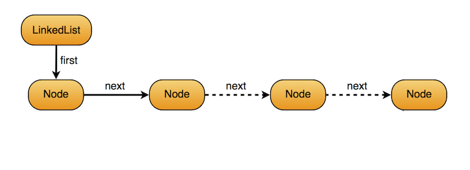

Vorlesung 5 - CSS und weitere JS-Konzepte
 16.11.2020
16.11.2020
Eine neue Woche, eine neue Vorlesung. Und wieder starten wir mit einem Teil über HTML. Dieses Mal geht es um CSS.
CSS
Erst einmal ging es darum, was CSS eigentlich ist. Es ist die Kurzform für Cascading Style Sheets und bietet eine Möglichkeit HTML Objekte zu designen - also ihr Aussehen und teilweise ihr Verhalten zu definieren.
Einbinden von CSS
Analog zu JS gibt es auch für CSS verschiedene Wege es in HTML-Code einzubinden. Dies sind wie folgt:
Das direkte Einbinden in einen Tag
<p style="color: green;">Grüner Text</p>
Das Einbinden in einen separaten style-Tag
<head>
<style>
p {
color: green;
}
</style>
</head>
<body>
<p>Grüner Text</p>
</body>
Das Auslagern in eine separate CSS-Datei
Hierbei ist der CSS-Code in einer seperaten Datei untergebracht.
<head>
<link rel="stylesheet" href="style.css">
</head>
<body>
<p>Grüner Text</p>
</body>
Selektoren
Nun ging es um die Adressierung der HTML-Tags im CSS-Code.
Eine Variante haben wir oben schon gesehen. So lassen sich Tags mit dem jeweiligen Namen ansprechen.
Allerdings gibt es noch drei weitere Varianten von Relevanz. So können HTML-Tags zusätzliche Attribute bekommen über die sie angesprochen werden können.
Diese sind das class- und das id-Attribut. Letzteres haben wir im Rahmen der JS-Funktion getElementById schon kennengelernt.
<head>
<style>
#meinText {
color: green;
}
.meinBild {
width: 100%;
}
</style>
</head>
<body>
<p id="meinText">Grüner Text</p>
<img class="meinBild" src="lustigesBild.jpg"/>
</body>
Neben den Attributen die einem Tag noch hinzugefügt werden können gibt es in CSS auch die Möglichkeit alle sich auf der Seite befindenden Elemente anzusprechen. Dies ist über den * möglich. Ich beispielsweise nutze ihn um margin (Außenabstand) und padding (Innenabstand) für jedes Element der Seite auf 0 zu setzen. So kann ich mit meinen Styles von Vorne anfangen und die vom jeweiligen Browser vorgegebenen Standardwerte überschreiben.
* {
margin: 0;
padding: 0;
}
JavaScript
Nun ging es weiter mit Javascript. Heute wurden uns weitere Konzepte und Datentypen aus JavaScript vorgestellt. Angesichts der Tatsache, dass der Foliensatz für heute 85 Folien umfasst und vieles bereits aus Java bekannt ist (z.B. Konzepte wie "Call by Reference vs. Call by Copy") werde ich mich dabei wie immer auf die mir neuen und interessanteren Inhalte beschränken. Diese waren heute:
- Arrays
- Erstelung von Objekten mit dem object Konstruktor
- Kapselung
Arrays
Angefangen haben wir mit Arrays. Diese sind zwar ähnlich zu Java, aber trotzdem interessant für mich aus dem folgenden Grund. Sie sind zwar laut unserem Dozenten als Array Lists implementiert, lassen sich aber trotzdem über den Index ansprechen. Der Grund warum das so interessant war ist, dass ich das bei linked Lists aus Java schlichtweg nicht kannte, denn wie man in der untenstehenden Abbildung aus unserer Programmier Vorlseung sehen kann enthalten Linked Lists, zumindest in Java nur einen Verweis auf das nächste Element. So ließen sie sich nicht über den Index ansprechen.
Scheinbar geht dies aber in JavaScript. So kann man im nachfolgenden Beispiel ein Array deklarieren und initialisieren. Dann Werte an eine Stelle des Arrays schreiben und diese con dort auch wieder lesen.
// initialisieren ein Array mit 10 Stellen
var meinArray = new Array(10);
// schreibe einen Wert in das Array
meinArray[4] = "Test";
// lese den Wert von dort wieder aus
alert(meinArray[4]);
Erstelung von Objekten mit dem object Konstruktor
Aus Java kannte ich bereits Klassen. Mit Hilfe dieser Klassen konnte man dann Instanzen einer Klasse erzeugen, so genannte Objekte. JavaScript besitzt zwar seit ECMAScript 2015 auch Klassen, allerdings schien das unser
Dozent nicht zu wissen (um fair zu bleiben, ich musste auch erst mal googlen). Und so wurde uns etwas mir vollkommen Unbekanntes vorgestellt: der obbject-Constructor.
So hatte JavaScript zwar bis 2015 keine Klassen aber Objekte ließen sich mit diesem Konstruktor einfach erzeugen.
// Objekt erzeugen
var meinObjekt = new Object();
//Eigenschaften setzen
meinObjekt.name = "Peter";
// Methode definieren
meinObjekt.nameAusgeben = function() {
alert("Mein Name ist " + this.name);
}
Nun lassen sich diese Objekte nicht nur durch umständliches setzen von Eigenschaften und Methoden erstellen, sondern auch durch sogenannte Literale. In diesem Fall ist dies JSON (Java Script Object Notation). So lassen sich die Befehle oben folgendermaßen zusammenfassen.
var meinObjekt = {
name = "Peter",
this.nameAusgeben = function(){
alert("Mein Name ist " + this.name);
}
}
JSON ist vor allem als Austauschformat sehr hilfreich, wenn es darum geht kurz uns schnell Objekte hin und her zu schicken.
Jetzt haben wir schon mal konkrete Objekte erzeugt. Wie aber bekommen wir eine "Obektmassenproduktion à la Java hin"? Die Antwort hierauf ist ein eigener spezielisierter Konstruktor.
Bis jetzt haben wir ja immer new Object geschrieben, wenn wir ein Objekt erstellen wollten. Wir können jedoch genauso gut hingehen und einen eigenen Konstruktor schreiben, der schon alle unsere "Einstellungen" enthält.
Das sieht dann so aus:
function User(n){
this.name = n;
this.nameAusgeben = function(){
alert("Mein Name ist " + this.name);
}
}
Das sieht auf den ersten Blick zwar ähnlich aus wie oben aber bei genauerer Betrachtung fallen uns mehrere Dinge aus. So können wir hier beispielsweise beliebig viele Instanzen dieses Objektes erzeugen oder diese "function" noch parameterisieren (hier das n) um den Namen individuell festlegen zu können etc. etc..
Kapselung
Nachdem wir uns das nun angeschaut hatten ging es weiter mit einem kurzem Exkurs zur for ... in ... Schleife (die über jedes Element eines Obkekte iteriert) und dem instanceof Operator
(mit dem man den Typ eines Objektes überprüfen kann) bevor wir schlussendlich zur Kapselung gelangten.
Die Kapselung beschreibt grob gesagt, wie bestimmte Teile von Objekten von der "Außenwelt" abgeschirmt werden können. Dies hat neben Sicherheitsaspekten auch den Vorteil, dass das eigene Objekt nur so genutzt
werden kann, wie es vorgesehen ist. Und zwar über festgelegte Schnittstellen in Form von öffentlichen Methoden.
Mit öffentlichen Attributen haben wir weiter oben schon gearbeitet. Sie trugen alle das Schlüsselwort this vor ihrem Namen. So konnte this.name nicht nur innerhalb des Objektes, sondern auch von
außerhalb erreicht werden. Um das zu verhindern, streichen wir dort einfach das this und ersetzen es durch ein var. Um dann außerhalb des Objektes darauf zugreifen zu können erstellen wir soganannte
Setter- und Getter-Methoden. Ein Besipiel dafür kann man hier sehen:
function User(n){
var name = n;
this.getName = function(){
return name;
}
this.setName = function(n){
this.name = n;
}
}
Das hier Gezeigte bringt uns zwar noch nicht viel, aber das ist ja auch nur ein simples Beispiel.
Nachdem wir damit fertig waren, ging es auch schon zur heutigen größeren Übung. Zu finden ist diese im nächsten Eintrag.